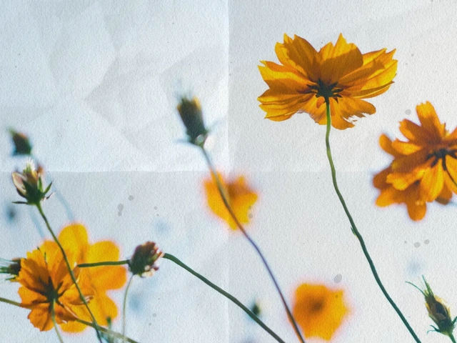
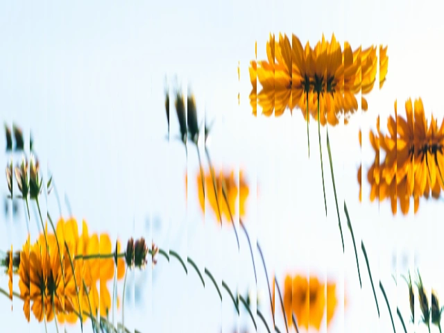
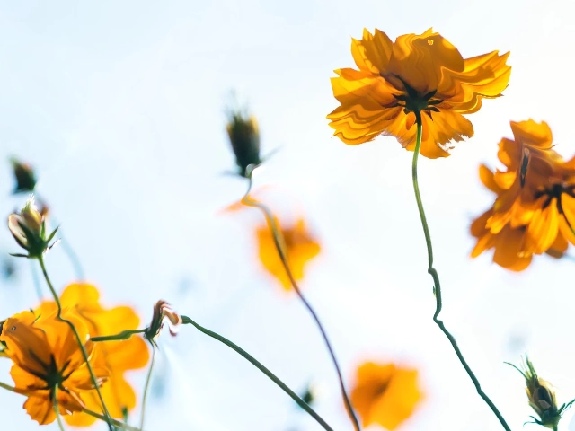

Bring something of your own.
Upload a photo, a transparent logo, or a shape. Make it tactile, reflective, pixelated, or beautifully strange.
Bend light. Fold paper. Give your logo a liquid-metal finish.
Shape color, texture, and motion into something entirely yours.
This live preview needs WebGL 2. The example image is shown instead.
A picture, a shape, or just a little color. It starts with a little curiosity.
An effect for every kind of idea
Seven image filters. Three logo animations. Twenty generative effects. Start with a look you love, then follow your curiosity somewhere new.



Real effects from the shader library. Your pictures, shapes, and colors go in next.
Less setup. More making.
You set the direction.
The shader follows your lead.
Start with paper, glass, liquid metal, or a flowing field of color. Try a preset to find your direction.
Drop in your image or logo. Adjust the texture, palette, light, and speed. Every change appears live.
Save a PNG or an animated WebM. Keep your editable settings, or add a still to the Studio image library.
Made for the way you experiment
Upload a photo, a transparent logo, or a shape. Make it tactile, reflective, pixelated, or beautifully strange.
Change colors, push the distortion, slow the motion. Start with a preset; finish with something entirely your own.
Export in landscape, square, or portrait. Save your settings with source images included, and pick up the idea later.
A small beginning
Free, open source, and ready to run locally.
Start from the source in a few commands.
git clone https://github.com/birol-dev/Manim-Fullstack.git
cd Manim-Fullstack
python run.pyPython 3.11+ and Node.js 20.19+ for the first build.
The launcher prepares the app and opens it in your browser.
No. Build your look with presets, sliders, color controls, and your own images. Python is only needed to run the app from source; creating effects in the Shaders tab is visual.
Templates can export MP4, GIF, WebM, MOV, and PNG. Shaders export PNG stills and WebM videos. You can also add shader stills to the app’s image library for use in templates.
Yes, after the initial setup. Fonts, templates, shaders, and sample images are bundled. Any AI tools you choose to connect may need their own internet connection.
Yes. Manim Studio is open source under the MIT license. Its shader library, Paper Shaders, uses Apache 2.0. There is no paid plan or account required to use the studio.